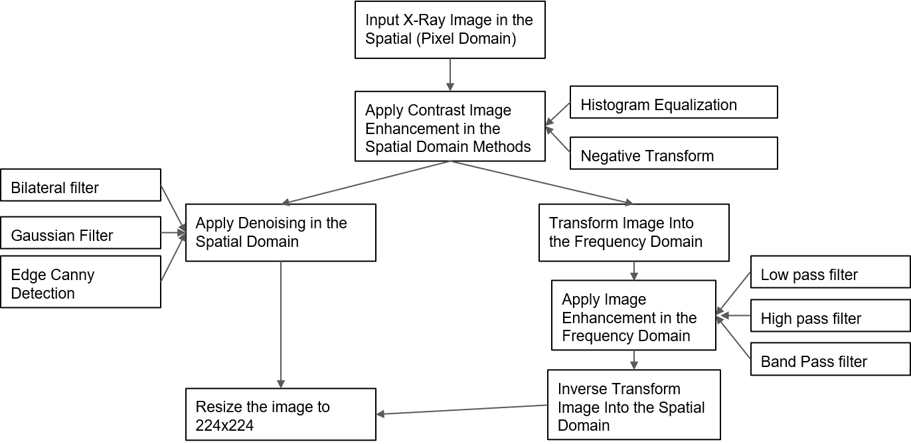

| Paper PDF |

|
This paper investigates into the effectof different image enhancements techniques, both in spatial and fourier/frequencydomain on the classification model. Transfer learning on a subset of the generateddataset was used to train two popular architectures: VGG16 and ResNet50 net-works to classify images. After evaluating models with the test dataset,on averagesensitivity rate was 90% and specificity rate of around 95% was achieved for bestimage enhancement scenarios, which was Histogram Equalization with low passfiltering in frequency domain. High sensitivity and specificity is encouraging, as itshows the promise of using X-ray images for COVID-19 diagnostics. The paperalso shows that the combinations of the two domains methodologies will result ina noise free sharp image with a very good contrast, which increase the positiveevaluation metrics by nearly 3% Please feel free to add any additional links that are relevant here. |
|
|
| Paper: |
| Code and Data: |